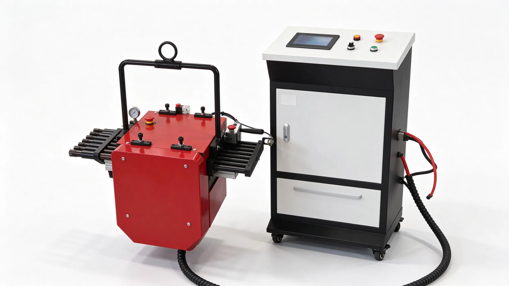

Machines that pair with this one
Other joining stations for tube work.

Welding · brazing
Turntable-Type Copper Manifold Brazing Machine
Turntable brazing for manifold joints in volume.

Welding · tube joining
Copper-Aluminum Tube Butt Welding Machine
Butt welding for copper to aluminium tube joints.

HVAC coil · expansion
Portable Tube Expander
Portable expansion for the same on-site work.